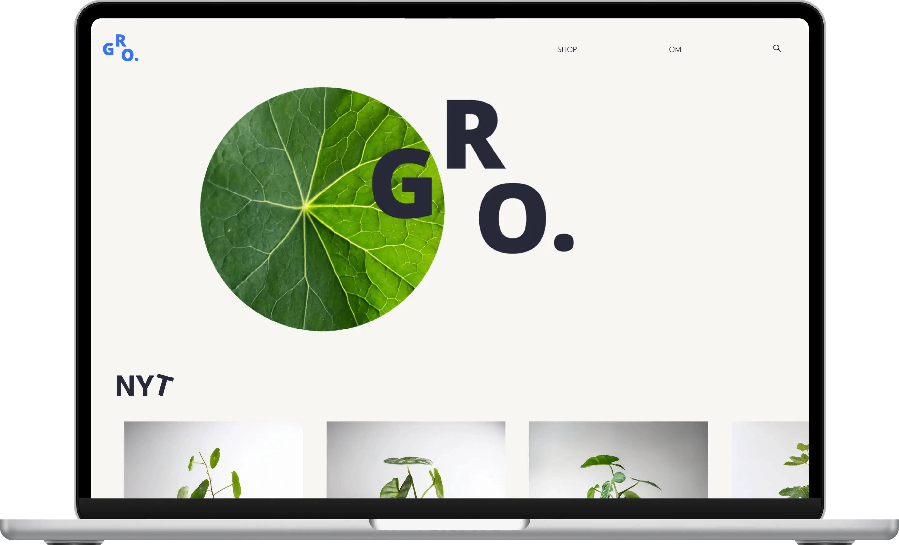
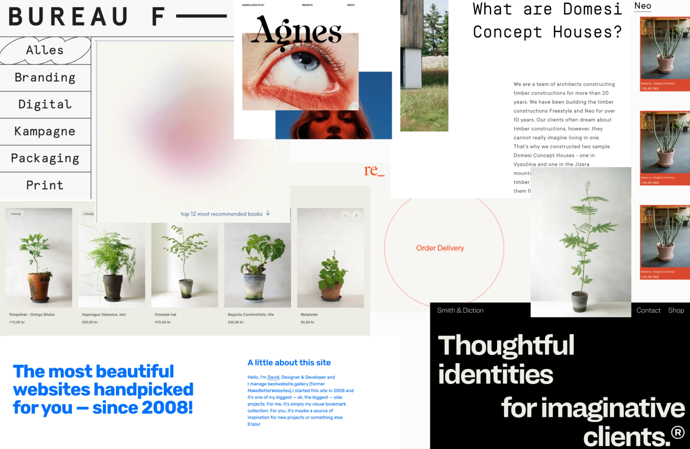
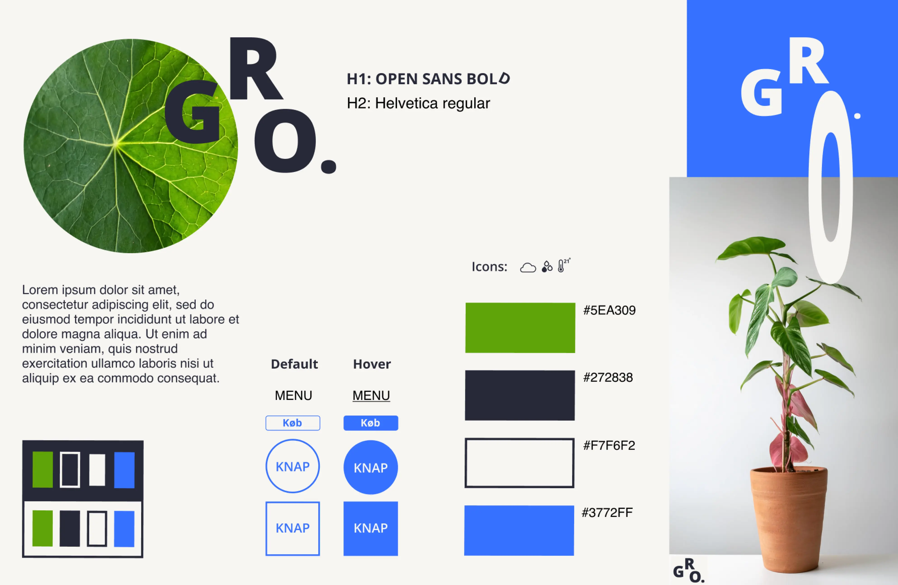
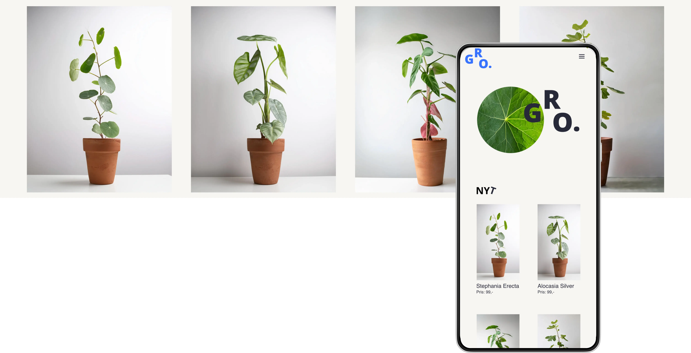

GRUNDLÆGGENDE
UX/UI
Temaet
Opgaven handlede om at designe og udvikle et website med fokus på brugeroplevelse (UX) og brugergrænseflader (UI), herunder research, idéudvikling, digital prototype i Figma og kodning af en MVP (Minimum Viable Product). Jeg valgte at lave “GRO”, en moderne plantewebshop, med fokus på usability, visuelle konventioner og responsivitet.
Formålet
Formålet var at anvende UX/UI-principper i design- og udviklingsprocessen. Temaet skulle give erfaring med værktøjer som Figma, wireframing og testing af brugeroplevelse samt udvikling af et responsivt website med HTML, CSS og JavaScript.
Proces
Jeg startede med at vælge emnet for mit website og fulgte de metoder, vi lærte i undervisningen. Jeg lavede grundig research om emnet, som jeg brugte som inspiration til at lave moodboards og styletiles. Dette hjalp med at fastlægge den visuelle retning for designet.
Herefter lavede jeg wireframes og udviklede en digital prototype i Figma, som jeg testede med brugere for at indsamle feedback og forbedre designet. Jeg gennemførte brugertests som tænke-højt-test og 5-sekunders test og brugte værktøjer som Lighthouse og W3C Validator for at sikre, at både funktionalitet og design levede op til de nødvendige standarder.
Løsning
Med GRO anvendte jeg de metoder, vi har lært, og fokuserede på webkonventioner, usability og et minimalistisk design. Jeg skabte et brugervenligt og responsivt website, der opfyldte opgavens krav om et funktionelt, visuelt tiltalende site. Ved at implementere de UX/UI-principper, jeg har lært, sørgede jeg for en intuitiv brugeroplevelse og et responsivt layout.
Læring og
refleksion
Dette tema har givet mig en forståelse for UX/UI-værktøjerne, fra research og idéudvikling til design og implementering. Jeg har også fået indsigt i vigtigheden af at arbejde iterativt og anvende feedback fra brugertests til at forbedre designet. Denne erfaring vil hjælpe mig med at skabe mere brugervenlige løsninger i fremtidige projekter.
GRO